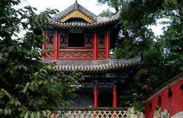

杭州景点
杭州拥有两个国家级风景名胜区—西湖风景名胜区、“两江一湖”（富春江—新安江—千岛湖）风景名胜区；两个国家级自然保护区—天目山、清凉峰自然保护区；五个国家森林公园—千岛湖、大奇山、午潮山、富春江和青山湖森林公园；一个国家级旅游度假区—之江国家旅游度假区；全国首个国家级湿地—西溪国家湿地公园。杭州还有全国重点文物保护单位14个、国家级博物馆5个。全市拥有年接待1万人次以上的各类旅游景区、景点120余处。
-
武侯祠
 -
杭州西湖

杭州拥有两个国家级风景名胜区—西湖风景名胜区、“两江一湖”（富春江—新安江—千岛湖）风景名胜区；两个国家级自然保护区—天目山、清凉峰自然保护区；五个国家森林公园—千岛湖、大奇山、午潮山、富春江和青山湖森林公园；一个国家级旅游度假区—之江国家旅游度假区；全国首个国家级湿地—西溪国家湿地公园。杭州还有全国重点文物保护单位14个、国家级博物馆5个。全市拥有年接待1万人次以上的各类旅游景区、景点120余处。